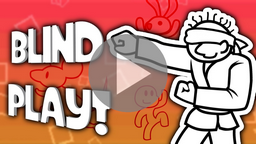
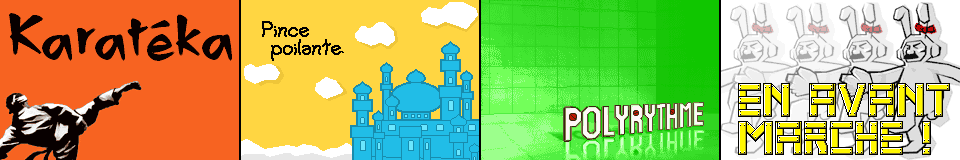
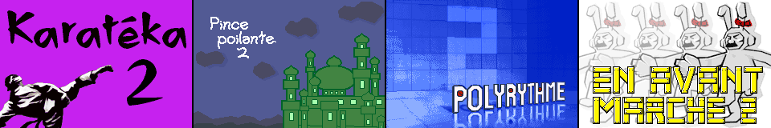
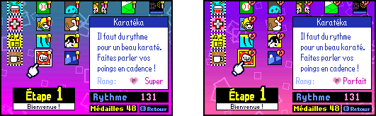
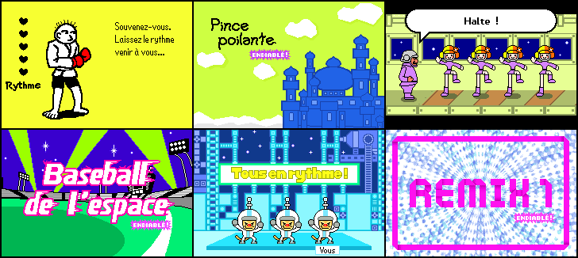
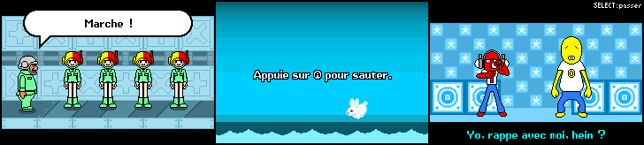
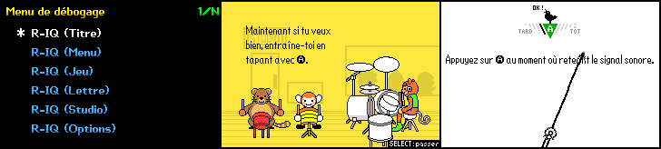

|

|
|
|
|
|
Rhythm Paradise Advance, le patch de localisation française
pour Rhythm Tengoku, est proposé dans deux versions.
Version classique
Permet de profiter du jeu original en français, sans contenu additionnel.
Version PLUS
Ajoute de nombreuses améliorations et options d'accessibilité.
Fonctions d'accessibilité
D'abord pensées pour les malvoyants, ces fonctions visent à rendre l'expérience de jeu plus agréable pour tous.
Parmi ces améliorations :
- quelques effets sonores du jeu ont été légèrement modifiés, que ce soit dans leur ton ou leur panoramique, afin de les différencier plus facilement ;
- quelques effets sonores (dont des voix) ont été ajoutés pour mieux indiquer les actions à effectuer.
La vidéo Rhythm Paradise Advance - Fonctions d’accessibilité pour malvoyants sur YouTube détaille toutes ces améliorations (audio et sous-titres français disponibles).

Nouveaux prologues pour les rééditions de mini-jeux
Dans Rhythm Tengoku, certains mini-jeux utilisent le même prologue (la même intro) pour leur première et leur seconde apparition.
La version PLUS modifie les seconds prologues pour ces mini-jeu, afin de les rendre plus originaux, en adéquation avec ce qu'ont fait les autres titres de la série.
Les mini-jeux concernés sont Karatéka 2, Pince poilante 2, Balade nocturne 2,
Tempo mécano 2, Polyrythme 2, Baseball de l'espace 2, et Esprits espiègles 2.
De plus, les prologues de Fous du ballon 2 et En avant, marche 2 ont été modifiés dans la version PLUS pour que le « 2 » apparaisse.

Karatéka 2, Pince poilante 2, Polyrythme 2 et En avant, marche 2 dans la version classique.

Karatéka 2, Pince poilante 2, Polyrythme 2 et En avant, marche 2 dans la version PLUS.
Possibilité de retenter un Parfait après réussite
Après avoir remporté un Parfait sur un mini-jeu, vous pourrez retenter de viser le Parfait autant de fois que souhaité !
Pour cela, il suffit de maintenir le bouton SELECT au lancement du mini-jeu.
Icônes du Parfait dans la grille des mini-jeux
Rhythm Tengoku ne permettait pas de savoir en un coup d'œil sur quels mini-jeux le Parfait a été obtenu.
La version PLUS remplace la médaille par un logo de Parfait (un cœur avec un P) sur l'écran de choix du jeu, pour les mini-jeux où le Parfait a été atteint.
De plus, le rang « Super » est remplacé par le rang « Parfait ».

♪♪♪♪♪♪♪♪Version classique♪♪♪♪♪♪♪♪♪♪♪♪♪♪♪♪♪♪♪♪♪♪♪Version PLUS
Moins de chances de briser injustement un Parfait
Cette fonction ajuste les moments où les appuis du joueur peuvent briser un Parfait.
Originellement, le moindre faux-pas, même avant que le mini-jeu ne commence réellement, pouvait briser le Parfait.
La version PLUS s'est inspirée des titres suivants de la série (à l'exception de Rhythm Paradise Groove) pour que les appuis accidentels en tout début ou en toute fin de mini-jeu ne puissent plus briser votre chance d'obtenir le Parfait.
Accès au mode « ENDIABLÉ ! » de la version arcade
Saviez-vous que Rhythm Tengoku existe aussi en version arcade ? Celle-ci propose des rééditions des 6 premiers mini-jeux, avec une musique plus rapide et réarrangée.
Ces mini-jeux portent la mention « ENDIABLÉ ! ».
La version PLUS vise à ajouter ces derniers, accessibles sur l'écran de choix du jeu après avoir obtenu un « Super » sur tous les mini-jeux.
IMPORTANT : Ces mini-jeux bonus sont encore en cours de développement
par l'équipe Rhythm Heaven Advance et seront implémentés au fil d'une
mise à jour du patch.

♪♪♪♪♪♪♪♪♪♪♪♪♪♪♪♪♪Aperçu des 6 mini-jeux en mode « ENDIABLÉ ! »
Ajout de textes manquants
Quelques textes ont été rajoutés là où c'était nécessaire :
- dans En avant, marche !, les ordres sont maintenant indiqués visuellement dans une bulle, comme dans Rhythm Paradise Megamix ;
- dans Lago salto, une phrase a été ajoutée en début de mini-jeu, en guise de tutoriel ;
- dans Mecs du rap, les paroles lors de l'entraînement apparaissent désormais.

♪♪♪♪♪♪♪♪♪♪♪♪♪♪♪♪Ces textes ne sont présents que dans la version PLUS
Accès à un menu secret
La version PLUS permet à tous d'accéder au menu de débogage, proposant un accès rapide à toutes les scènes du jeu, dont certains mini-jeux inutilisés.
Il est conseillé de n'accéder à ce menu qu'une fois le jeu principal terminé,
afin d'éviter tout divulgâchis.
Vous pouvez aussi trouver dans ce menu, les mini-jeux en mode « ENDIABLÉ ! » en version préliminaire.
Certaines scènes ont été ajoutées par l'équipe Rhythm Heaven Advance, dont un séquenceur et un éditeur de sauvegarde (il est vivement recommandé de faire une copie de votre fichier de sauvegarde avant de l’utiliser).
Pour accéder au menu de débogage, il suffit de se placer sur « Jeux de Rythme » puis de maintenir L + R et presser START.

♪♪♪♪♪Menu de débogage♪♪♪♪♪♪♪♪♪♪♪Singe & Tanuki♪♪♪♪♪♪♪♪♪♪♪♪♪♪Métronome
|
|